If you enjoy walking the Lebanon Valley Rail Trail through Cornwall and were intrigued by last year's story about the hidden pools, get ready for another surprise. As you walk south from the "Root Beer Barrel" you will pass the old railroad station (now the Borough Police) and step onto the iron railroad trestle. Look off into the trees on your left and try to imagine the noise of industry of the early 1800s…
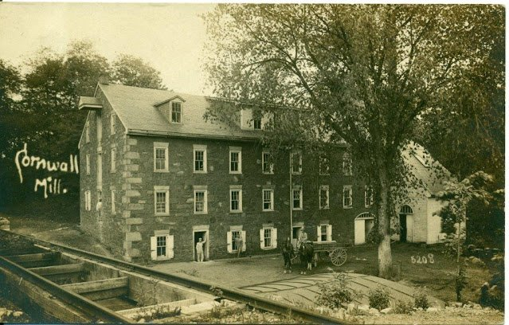
One of the features of the 18th century Cornwall Iron plantation that sustained a community of miners and furnace workers exists today only in photographs and old maps. All that remains are traces of a mill stream, yet what a story that can be told!
Located on the overgrown western edge of now Cornwall Manor property, this mill was built by the Grubb family in the mid-1700s, and taken over when the estate was acquired by Robert Coleman. It had fallen into disrepair sometime before World War II but remained standing at the time the estate became the Methodist Church Home, now known as Cornwall Manor. Beyond repair and posing safety risks to curious local teenagers, the structure was razed in 1960.
To clarify, a mill existed on this location for an unknown period of time before it was replaced as early as 1798 by the large mill depicted in Figure 1. Records at the Cornwall Iron Furnace mention a mill in 1765, at a time when Pennsylvania was still a British colony. Cornwall Manor's Gateway Library features an intriguing drawing (Figure 2, dating to the very early 1800s) of Robert Coleman's Cornwall estate. In addition to his Elizabeth furnace estate in Brickerville and another in Colebrook, he had acquired Cornwall in the late 1790s.
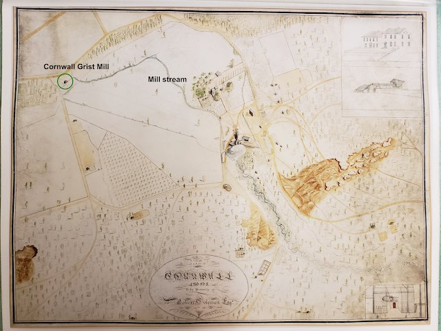
Just as the sketch shows features of the "Buckingham" mansion and Cornwall Iron Furnace, which were changed by later renovations, the depiction of the mill (Figure 3) suggests a much smaller structure, consistent with 18th century mills. The newer building was roughly 75 feet wide and 35 feet deep and four stories tall. The original building appears to be smaller, with 1-1/2 to 2 stories, and an exterior water wheel.
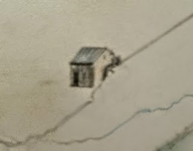
Beginning around the 1840s the Coleman family was investing in upgrades to the Iron Furnace, the iron master's mansion and other structures. The reconstruction of the grist mill may have occurred then, if not several decades before. One 1803 source mentions there was also a sawmill. Records at the Lebanon County Historical Society include "grain books" dating to 1826. These books show detailed accounts of individuals, itemizing the grain (wheat, rye, corn, oats) they had delivered, as well as flour and other commodities (including bacon at 8 cents a pound!) received. Such details suggest a larger operation had been established.
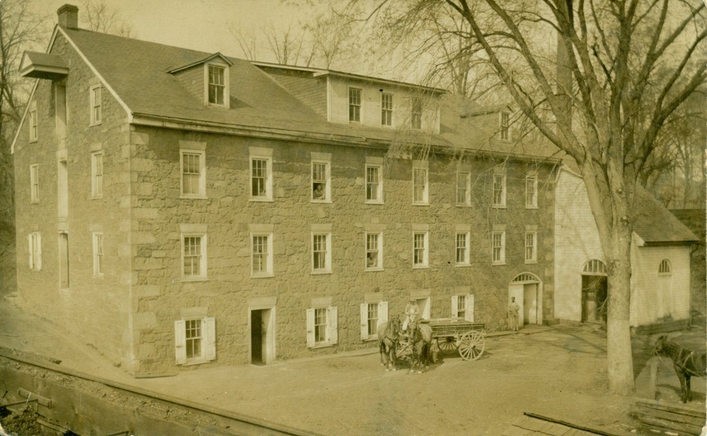
The large format of the newer mill as shown in these various photographs appears to be one of the new "automated mills" designed by American inventor Oliver Evans. Evans had designed his automated mill in Newport, Delaware in the 1780s and continued to improve it over several years, receiving patents from several states. When the U.S. Patent Office was established in 1790 his was one of three inventions patented (history-computer.com). He published his designs in an extensive, exhaustively-illustrated 476-page book "The Young Mill-Wright and Miller's Guide" first published in 1795, followed by 14 subsequent editions.
The four-story structure contained elevators, conveyors and various machinery that together took various types of grain from local farmers and produced flour. In the above picture, barrels of grain were received at the left end of the building, assisted by the hoist at the top floor. According to Evans' design (Figures 5 and 6 below), the grain was hoisted to the second floor where it was gravity-fed to elevators on the first floor and raised to the top floor where it was conveyed into various storage bins. The miller would control directing various jobs to the millstones for grinding and subsequent sifting machines to finish the flour.
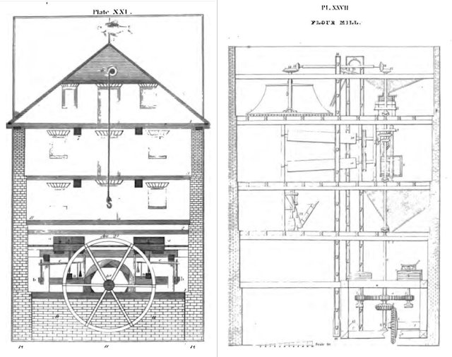
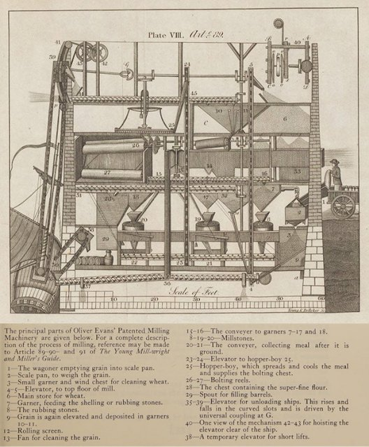
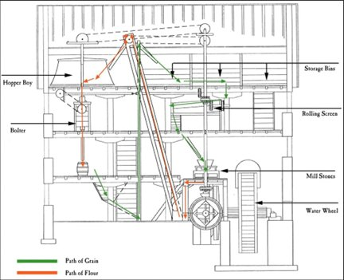
The milling process is simplified by the above figure, which comes from the Mount Vernon website describing George Washington's grist mill. Videos of operating historic mill machinery there provide insight to the likely operation of the Cornwall Grist Mill. Washington's mill was first constructed in 1770, and improved in 1791 using Evans' automated design. Robert Coleman was known to associate with George Washington, making it possible that Coleman had been influenced in the 1790s to upgrade his mill.
The Mill Stream
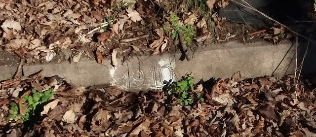
All that remains today of the grist mill is the red sandstone channel of the mill stream or head-race to the mill, the "upstream" portion that was diverted from Furnace Creek, which runs straight through the Cornwall Manor meadow.
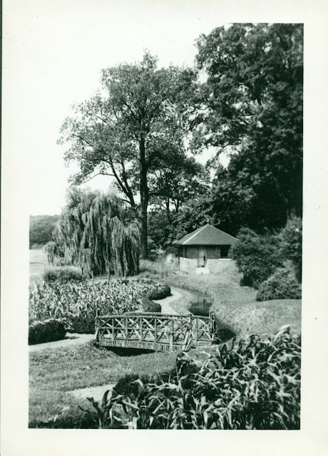
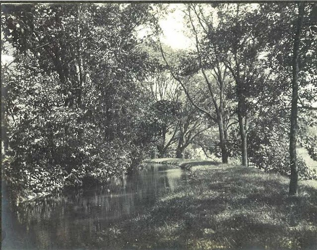
The inscription on the back of this photo (Figure 10) from the Cornwall Manor archives reads:
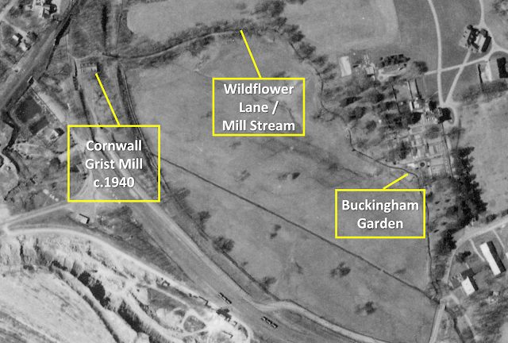
Steam Power
Beginning in the 1840s the Cornwall Iron Furnace was undergoing improvements to its blast apparatus including the addition of a steam engine to supplement and then replace its water wheel. A brief article in the York Gazette, Tuesday August 28, 1855 titled "Garner's Steam Engine" confirms that the Cornwall Grist Mill was likewise improved.
As with the Iron Furnace, the operation of the Grist Mill was made much more reliable with the addition of steam power. As shown in the previous photographs the white, wooden structure was added to the east side of the mill, supplementing and presumably eventually replacing the water wheel. The York Gazette article confirms that a sawmill was also present in the operation. The sawmill possibly is illustrated as one of the outbuildings in the map below.
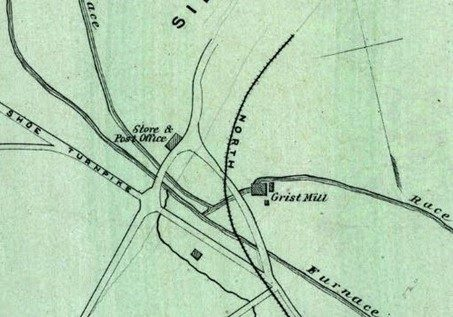
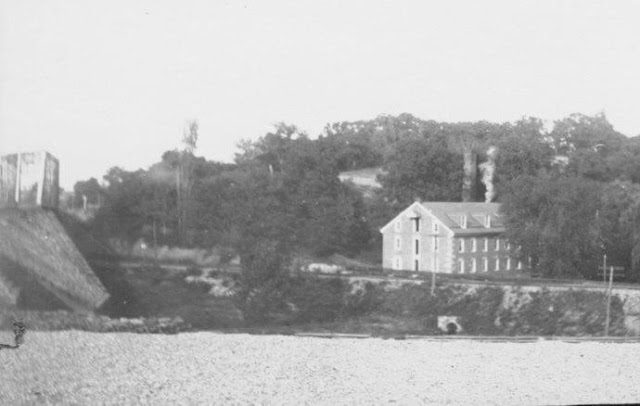
Railroads
Eventually the Cornwall Grist Mill was serviced by one and then a second railroad, with grades passing close by the west and then the east sides of the building. First to appear, as shown in Figure 12, was the Cornwall Railroad (c. 1850) from North Lebanon, proceeding south through Cornwall and Minersvillage to Penryn, as well as a spur that serviced the Cornwall Mine. Beneath this spur and adjacent to the mill were chutes and storage bins for receiving the coal for the steam plant.
Though the tracks are long-removed, parts of the rail support remain in the woods, and the embankment for this line still exists at the corner of Burd Coleman and Rexmont Roads by the Cornwall Borough Maintenance garage, across the street from the old miller's house at 101 Burd Coleman Road.
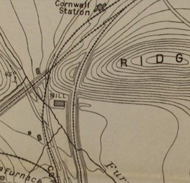
When Robert H. Coleman built his competing Cornwall & Lebanon railroad (c. 1883) southwest across the iron trestle to Mt. Gretna and beyond, he included a spur, now known as the extension of Gatehouse Lane, that serviced the Cornwall Mine (see Figure 14). The elevated grade of that rail bed remains among the others along Rexmont Road that remind us of the former industry in Cornwall.
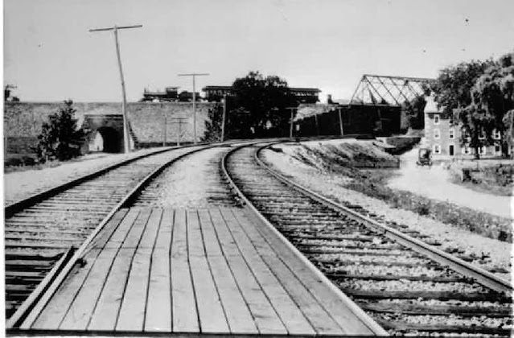
This delightful "day-in-the-life" action photo (Figure 15) shows two lines of the Cornwall Railroad passing next to the mill, the line on the right enabling delivery of coal to the mill. A now overgrown road on the right has an "old" car approaching the mill. The iron trestle stands in the background right, and the stone arch in background left, with a pedestrian passing through. Passing overhead on the Cornwall & Lebanon Railroad is a passenger train headed to Mt. Gretna.
The End of an Era
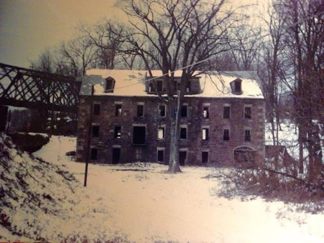
By 1945 the Cornwall Grist Mill, long out of operation, had suffered serious decay as shown in the above photo, yet it stood for 15 more years before its demolition in 1960. The mill had survived, barely, during Cornwall Manor's first decade, appearing like one of the bombed-out structures of war-torn European cities. Small wonder that it needed to be razed. How grateful we can be that other treasured structures remain to tell us Cornwall's history.
Changing Ownership
Though we may idealize historic structures like the Cornwall Iron Furnace and the Grist Mill as being in the public domain, the ownership of the mill changed hands with increasing frequency. Like the furnace, it had belonged to the Grubbs in the 1700's and to the Colemans in the 1800's. With the death of Robert Coleman's grandson R.W. Coleman in 1864, ownership of various assets was formalized by establishing the company "R.W. Coleman Heirs." Under great-grandson Robert H. Coleman, it transferred to the Cornwall Iron Company, Ltd. in 1886. In 1901 Lackawanna Iron & Steel Company acquired a 4/24th shared interest, which sold to the Bethlehem Steel Company on August 31, 1917.
A trust of which Bethlehem Steel was a party later divested its interest in this and other properties, and so the Grist Mill changed hands several more times. Included in the trust were notable Cornwall families, including the Freemans, John Percy Alden and his relatives the Derbys. One notable participant was Ethel Roosevelt Derby, daughter of Theodore Roosevelt. In October 1947 they sold the mill for $600 to Dewey R. & Elizabeth Bernard; Dewey a notable Bethlehem Steel employee and local surveyor. In April 1948 he sold it to his wife's relative George D. Binner of Womelsdorf for $1, apparently with thoughts of turning the mill building into a garment factory. In August it sold two more times, first to Richard Bucher and then to Curtis R. and Kathryn S. Batdorf (some records refer to it as the "Batdorf Mill"). The mill having been demolished in 1960, the Batdorfs sold the property to the Methodist Church Home (Cornwall Manor) in 1966.
Other Mills
Research on this impressive Cornwall landmark will continue, as each fascinating discovery seems to lead to several more. Certainly there have been numerous mills in the region, even in the immediate area. There were Zinn's Mill on the north side of Bismarck/Quentin, and Bowman's Mill on North Cornwall Road, both long gone. Horst Mill still stands in Rexmont. The other Coleman mill still stands in Colebrook, longing for restoration.
Those whose interest has been piqued will enjoy visiting Ressler's Mill on Newport Road in Ronks, PA. It dates to 1760 and remains a museum of living mill history.
The author gratefully acknowledges Michael Emery, Site Administrator of the Cornwall Iron Furnace, for his expertise, many ideas and sounding-board during this research.
Much gratitude also to Michael Trump, co-author of the book series "The Communities of Cornwall Across Time," for his seemingly inexhaustible supply of photographs. Additionally he researched the history of owners of the mill property.
Originally published on LebTown, July 18, 2023.